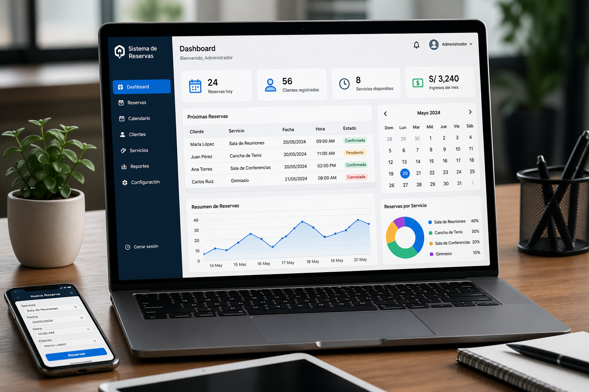
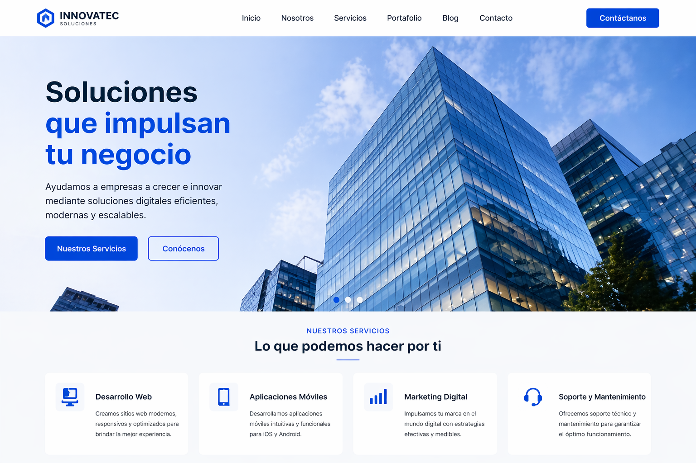
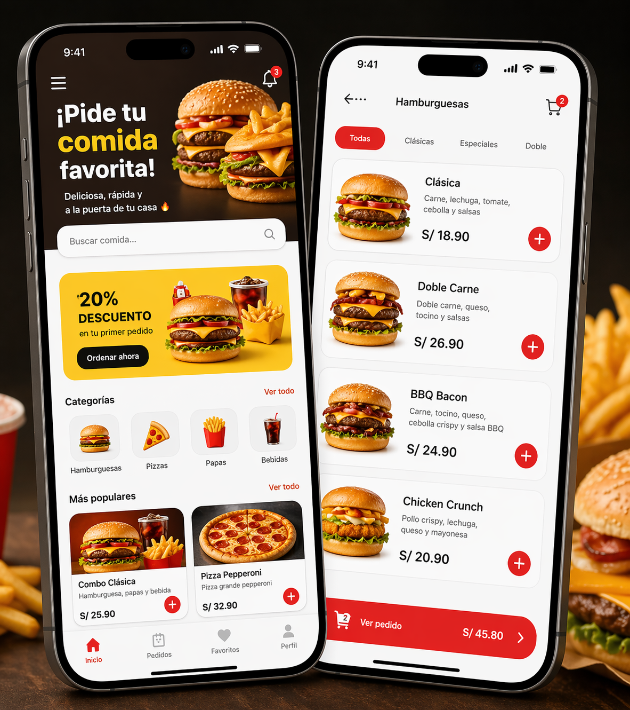
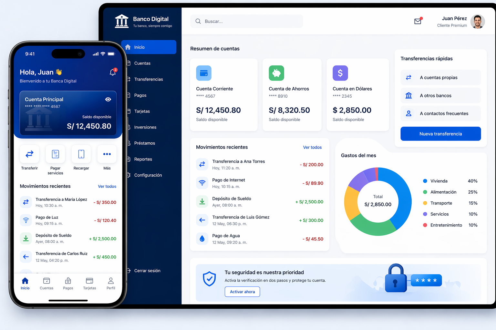
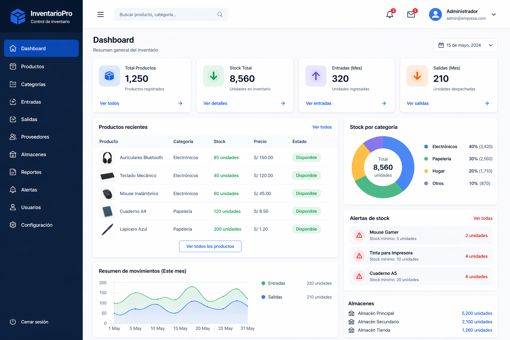
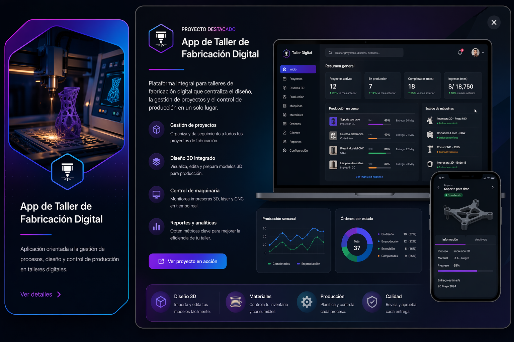

Actualmente soy estudiante de la carrera de Arquitectura de Plataformas y Servicios de Tecnologías de la Información en el Instituto de Educación Superior Tecnológico Público Pasco.
Tengo 20 años y soy de la ciudad de Cerro de Pasco, Perú. Y me apasiona el desarrollo web, el diseño digital y la creación de soluciones tecnológicas modernas que aporten valor a las empresas y mejoren la experiencia de los usuarios. Me especializo en páginas web, aplicaciones funcionales, diseño corporativo y proyectos orientados a la innovación tecnológica.

Este proyecto consiste en un sistema web desarrollado para la administración de reservas, control de horarios, citas y gestión de clientes. Permite optimizar procesos empresariales, mejorar la atención al cliente y automatizar tareas administrativas.

Este proyecto consiste en el desarrollo de una página web corporativa orientada a empresas que buscan fortalecer su identidad digital, mejorar su posicionamiento en internet y brindar una mejor experiencia a sus clientes. Incluye secciones informativas, contacto, servicios, portafolio empresarial y diseño moderno adaptable a dispositivos móviles.

Este proyecto consiste en una aplicación móvil orientada a restaurantes de comida rápida, permitiendo a los clientes realizar pedidos en línea, consultar menús, promociones, seguimiento de delivery y pagos digitales. Su objetivo es optimizar el servicio, reducir tiempos de espera y mejorar la experiencia del cliente.

Este proyecto consiste en un sistema bancario digital diseñado para la administración de cuentas, transferencias, pagos, historial de movimientos y control financiero. Permite brindar mayor seguridad, rapidez y eficiencia en los servicios bancarios, mejorando la experiencia del usuario y optimizando los procesos internos de la entidad financiera.

Este proyecto consiste en un sistema de control de inventario diseñado para empresas que necesitan administrar productos, stock, entradas, salidas y reportes de almacén de forma eficiente. Permite reducir pérdidas, mejorar la organización y optimizar la gestión interna del negocio mediante procesos automatizados.

Este proyecto consiste en una aplicación diseñada para talleres de fabricación digital, permitiendo la gestión de pedidos, control de materiales, seguimiento de producción, diseño de piezas y administración de maquinaria tecnológica como impresoras 3D, cortadoras láser y equipos CNC. Su objetivo es optimizar los procesos productivos y mejorar la eficiencia operativa.